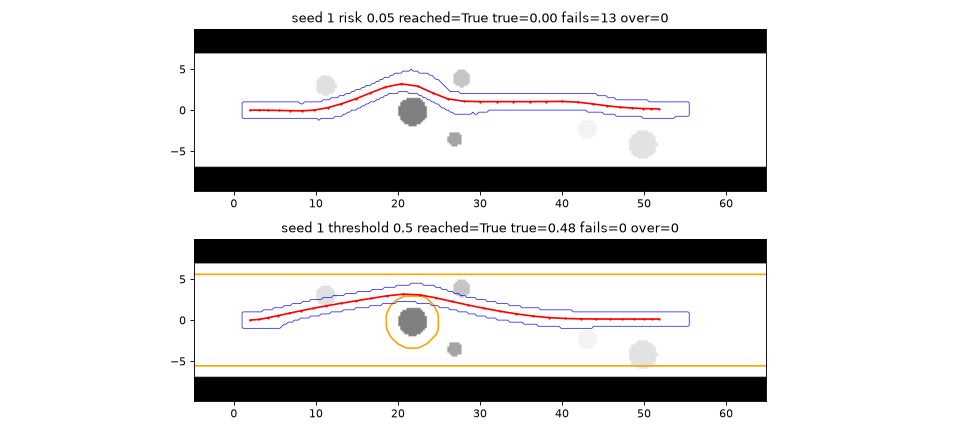
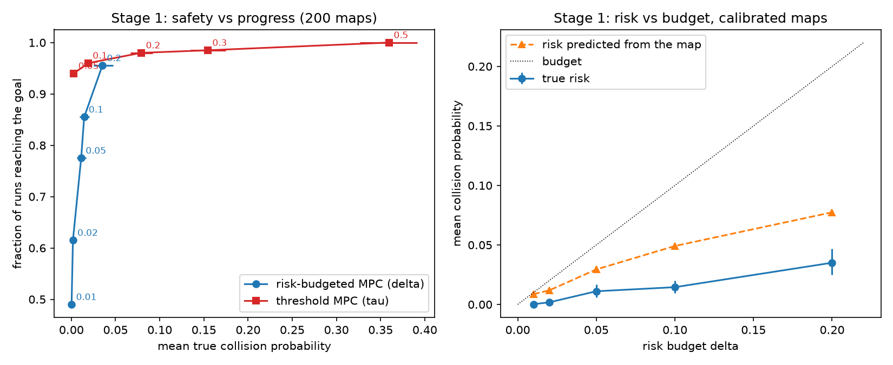
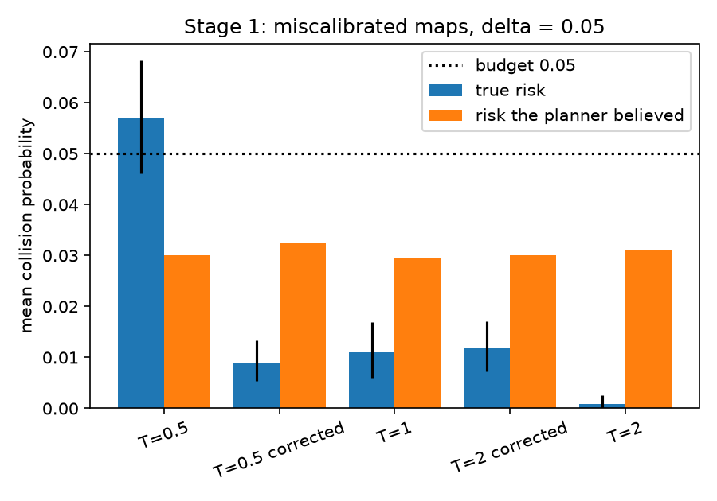
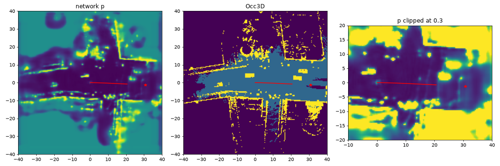
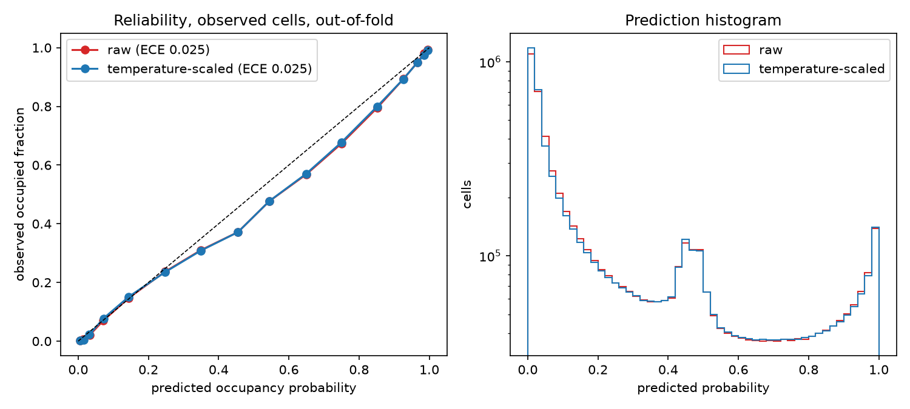
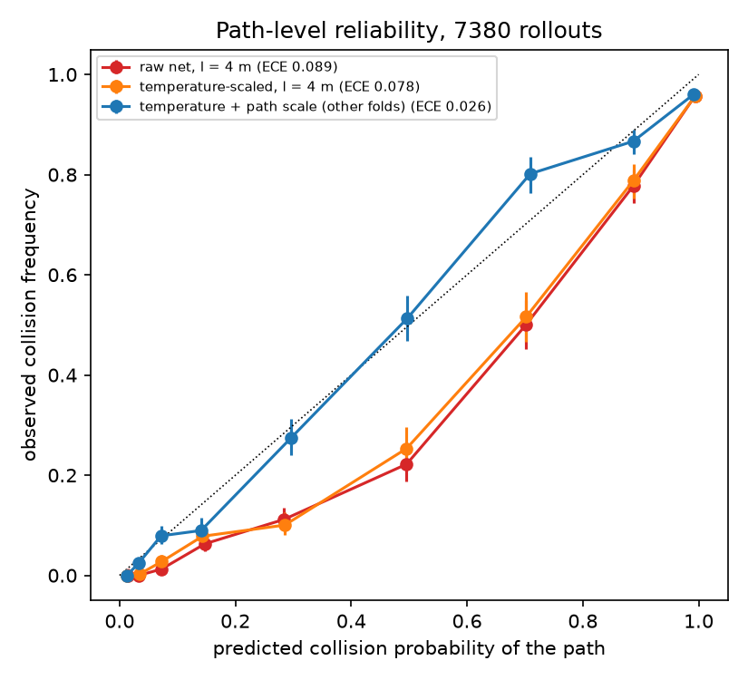

ROB 535 / NAVARCH 565 final project, Team 37 · briefing deck, Nov 20, 2026
What the project is, the ideas it rests on, the five papers, what is built and running, and what is left.
Repo: github.com/brandmcd/rob535-risk-mpc (private) · arrow keys or click to move
From the proposal, unchanged
A self-driving car's perception network outputs, for every patch of ground around the car, a probability that the patch is occupied. Most planners round that to occupied or free and plan as if the map were certain. We plan with the probabilities directly: the controller keeps the chance of collision along the whole drive below a budget δ (for example 5%).
Does planning with probabilities make the car safer, and what does it cost in progress?
Can the car trust a real network's probabilities? If it is told "5%", is the real rate 5%? If not, can a recalibration fix it?
Project type: combination of methods (syllabus type 1). Perception (occupancy network) + control (MPC) + risk limit (chance constraint), plus a calibration check neither source paper makes.
No late submission for the poster or report
| Date | What | Status |
|---|---|---|
| Fri Nov 20 | Proposal's decision point: SurroundOcc on a GPU, or a fallback | decidedCPU LiDAR network now, SurroundOcc on Great Lakes later |
| Mon Nov 23 | Hydra paper talk | separate deck |
| Wed Nov 25 – Fri Nov 27 | Thanksgiving | |
| Fri Dec 4 | Poster PDF on Canvas (Canvas date; syllabus prose says Dec 7) | todo |
| Mon Dec 7, 15:00 | Poster session, printed poster | todo |
| Fri Dec 11 | Four-page IEEE report + .tex + repo link | todo |
Grade weight: proposal 2%, poster 8%, report 15% of the course.
Occupancy grids, where their probabilities come from, MPC, risk budgets, and calibration.
The map the planner reads
Cut the ground around the car into square cells. Ours: 200 × 200 cells of 0.4 m, covering 80 m × 80 m, car at the center, x forward, y left.
Each cell holds p = probability that something solid is in it (a car, a wall, a pole, a person).
The 3D version stacks layers of voxels (3D cells). We flatten to 2D: a column is an obstacle if any voxel between 0.2 m and 2.2 m above the road is occupied.
p = 0.97 on the wall of a building; p = 0.3 behind a parked truck the sensor cannot see past; p = 0.01 on open road.
Paper 1: SurroundOcc (Wei et al., ICCV 2023)
A perception network takes sensor data and outputs, per voxel, a score. A sigmoid turns the score (the logit z) into a probability:
SurroundOcc does this from the car's six cameras alone: it lifts image features into a 3D volume with attention and predicts dense 3D occupancy. It also built dense training labels by fusing many LiDAR frames.
It needs a GPU. Our CPU stand-in today: a small U-Net on one LiDAR sweep (slide 19). Same output format, so SurroundOcc drops in later.
The input to our planner: a per-cell probability map from a real network, with whatever calibration errors that network has.
Networks trained with cross-entropy are often over- or under-confident. A planner that trusts "5%" literally inherits that error.
Paper 3: Occ3D (Tian et al., NeurIPS 2023) · Paper 4: nuScenes (Caesar et al., CVPR 2020)
Checked on the data: Occ3D is in the ego frame (70% of LiDAR points land in occupied voxels vs 32% in the sensor frame), and the road surface sits in voxel layer 2 (z ≈ 0).
Lecture 4 and HW1, applied to driving
At every control step (0.2 s):
Car model: the kinematic bicycle, state at the rear axle:
Solved with CasADi (symbolic modeling, automatic derivatives) and IPOPT (nonlinear interior-point solver), the HW2 toolchain. About 0.05 s per solve.
Our baseline
Pick a threshold τ. Cells with p > τ are obstacles; everything else is free. Plan as if certain.
Our baseline MPC keeps three circles covering the car outside every obstacle cell (using a distance field: distance from each point to the nearest obstacle).
The flaw: a cell at p = 0.3 with τ = 0.5 is treated as open road. Low τ is safe but blocks roads; high τ is fast but drives through likely obstacles. And τ says nothing about the chance of a crash.
We run several τ (0.05 to 0.5) so the comparison is fair: the risk planner must beat the best threshold, not a bad one.

Same map. Top: risk MPC (δ = 0.05) goes around everything. Bottom: threshold τ = 0.5 ignores the 0.21 and 0.34 objects (not obstacles at that τ). Numbers are each object's probability.
Paper 2: Let's Make a Splan (Michaux, Isaacson et al., 2024)
Instead of declaring cells occupied or free, constrain the probability itself:
δ is the risk budget. δ = 0.05 means "at most a 1 in 20 chance of hitting something on this drive".
Splan does this for a robot moving through a Gaussian splat scene (a 3D scene made of many small Gaussian blobs): it bounds the collision probability of the robot's motion and keeps it under a threshold inside trajectory optimization.
The idea of a hard collision-probability limit inside the optimizer.
Our map is an occupancy grid from a learned network, not a splat; our robot is a car with MPC; and we test whether the probability is true.
Blackmore, Ono & Williams 2011 (splitting a risk budget across time); Zhu & Alonso-Mora 2019 (chance-constrained MPC).
The modeling choice everything else depends on
First try: cells independent. P(no hit) = ∏(1 − p) over the cells the car covers. Failed: a blob of 50 cells at p = 0.05 gives 1 − 0.9550 = 92%. The car would not move, and the answer changes with grid size.
What we use: a correlation length ℓ. Cells closer than ℓ are the same object (one event); farther apart, independent. With hazard h = −log(1 − p):
G is hazard per meter traveled by the car's front edge. Driving through an object of probability q adds about −log(1 − q). Prior ℓ = 4 m (one car length).
∑ G(front) ds over the 4 s plan
+ R(end of plan) least hazard from there to the goal
≤ −log(1 − δ) − Hspent budget left
Hspent stops replanning from spending δ twice. R stops a plan from spending the budget it needs to finish. If nothing fits, the car brakes.
Paper 5: On Calibration of Modern Neural Networks (Guo et al., ICML 2017)
A probability is calibrated if, among all cells given p = 0.3, 30% really are occupied.
Reliability diagram: group predictions into bins, plot mean prediction vs observed frequency. Calibrated = on the diagonal.
ECE (expected calibration error): average gap between the two, weighted by bin size.
Guo et al. showed modern deep networks are usually overconfident, and that one number fixes much of it:
Fit T on held-out data by maximum likelihood. T > 1 softens probabilities toward 0.5; T < 1 sharpens them. It never changes which cells rank as more likely.
Something we found today that the proposal did not anticipate
Are the network's per-cell probabilities right? Reliability diagram and ECE on observed cells. Fix: temperature scaling.
Is the planner's path risk right? A path's predicted risk also depends on the correlation model (ℓ). Check: random 4 s rollouts, predicted risk vs whether Occ3D says they hit something. Fix: fit ℓ (one scale) on held-out scenes.
Why cell calibration is not enough: the network leaves a floor of p ≈ 0.025 on open road (true rate ≈ 0.008 there). With ℓ = 4 m, 30 m of empty road already reads as about 30% risk, so every budget δ ≤ 0.2 is infeasible.
Even a perfectly calibrated floor (0.008) would read about 6% for the same drive. Per-cell truth does not give path truth; the correlation assumption has to be calibrated too.
Everything below was built and run on Nov 20 and is in the repo.
Two stages, as in the proposal
Useful for the report's method section; each is now in the code
| Symptom | Cause | Fix |
|---|---|---|
| Risk MPC frozen at any δ | Cell independence makes faint blobs walls | Correlation length ℓ (slide 11) |
| Car stops in front of obstacles | Goal-distance cost cannot see around them; IPOPT picks "stop" | Dijkstra cost-to-go on each planner's own map; warm start along its route |
| Solver never converges (300 iterations) | Linear map interpolation has kinks at every cell edge | Smooth B-spline lookup tables, built per map (0.05 s/solve, was 1 s) |
| Budget overspent by 2× | Plans spent the whole budget in 4 s, none left to finish | Risk-to-go term R; brake when no plan fits |
| Hazard band skipped | One sample per 2 m step at 10 m/s | Three samples per step |
| Baseline stalls on open road | B-spline ripple of a 0/1 field and a 1000× cost cliff | Distance-field constraint; capped route cost |
200 synthetic maps, each method on every map; true risk computed exactly

The risk MPC stays under budget at every δ (true 0.011 at δ = 0.05, 0.035 at 0.2) but is conservative: its own predicted risk is about 2–3× the truth, so it stops more often (77% reach the goal at δ = 0.05). On these maps a low threshold (τ = 0.05: 94% reach, 0.003 risk) is a strong baseline. We report that as found.
δ = 0.05; the planner is handed σ(logit(p) / T) instead of p

This is Question 2 in a world where we know the truth. Stage 2 asks it of a real network.
Real LiDAR, real labels, a real network's probabilities

Left: network p. Middle: Occ3D (yellow obstacle, blue free, purple unseen). Right: p clipped at 0.3, showing the floor on open road. Red: the real drive.
5.7 million observed cells, all 404 keyframes, every prediction out-of-fold

So for this network, cell-level calibration is not the problem. The next slide asks whether the path risk is calibrated.
7,380 random 4 s rollouts from the 123 scenario starts; collision = swept footprint hits an observed Occ3D obstacle

Answer to Question 2 so far: a well-calibrated network still gives a miscalibrated planner, because the planner adds an assumption about how cells are correlated. That assumption can be fitted from data.
running 1,845 runs: risk MPC at δ = 0.02–0.2 with raw, temperature-scaled and path-scaled maps, and the threshold baseline
This slide fills in when the runs finish: collision rate (against Occ3D) vs δ, and safety vs progress against τ.
PDFs in papers/ (run papers/fetch.sh), BibTeX in refs.bib
| # | Paper | One-line idea | Our use |
|---|---|---|---|
| 1 | SurroundOcc, ICCV 2023 | Six cameras to dense 3D occupancy with attention | The probability source (Great Lakes); LiDAR U-Net stands in now |
| 2 | Let's Make a Splan, 2024 | Keep a robot's collision probability under a limit in trajectory optimization | The chance constraint P(collision) ≤ δ |
| 3 | Occ3D, NeurIPS D&B 2023 | Occupancy labels for nuScenes with visibility masks | Ground truth for collisions and for calibration |
| 4 | nuScenes, CVPR 2020 | Multi-sensor driving dataset, 1,000 scenes | Scenes, LiDAR, ego poses (mini split) |
| 5 | Guo et al., ICML 2017 | Deep nets are overconfident; temperature scaling fixes much of it | Reliability, ECE, the correction |
Not in the proposal but needed in the report: the correlation-length risk model and the path-level calibration are ours, and a reviewer will ask why they are reasonable. Blackmore 2011 is the closest prior work on splitting risk over a path.
Decisions, not tasks
Also in TODO.md
pred.npz, rerun stage 2Symbols used in this deck and the code
| p | Occupancy probability of one cell | z | Logit, the network's raw score; p = σ(z) |
| δ | Risk budget: max collision probability per drive | τ | Baseline threshold: p > τ is an obstacle |
| T | Temperature; p′ = σ(z / T) | ℓ | Correlation length: cells closer than this are one object |
| h | Hazard of a cell, −log(1 − p) | G | Hazard per meter the car's front edge travels |
| H | Hazard summed along a path; risk = 1 − e−H | R | Risk-to-go: least hazard from the plan's end to the goal |
| ECE | Expected calibration error | N, dt | MPC horizon (20 steps) and step (0.2 s) |
| Keyframe | Annotated nuScenes frame, 2 Hz | Out-of-fold | Predicted by a network that never trained on that scene |